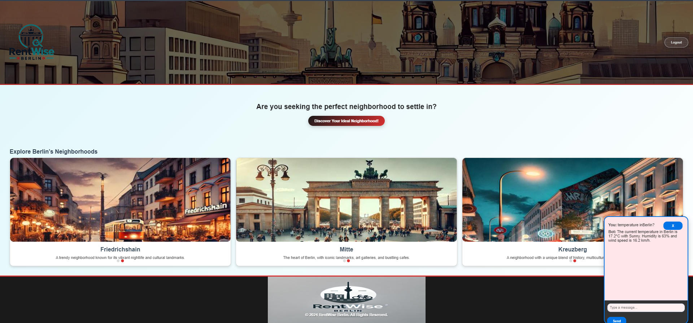
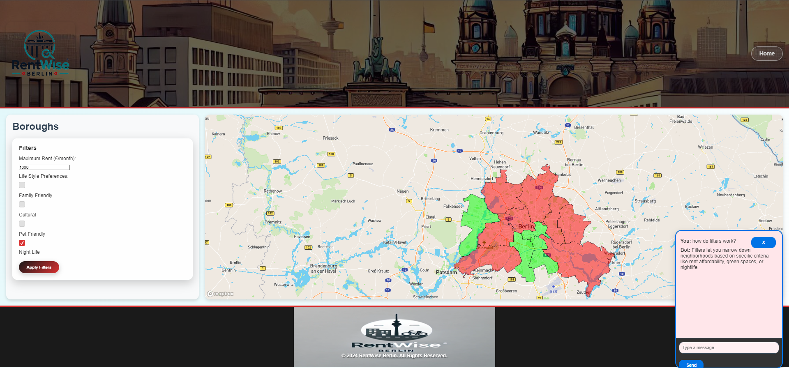
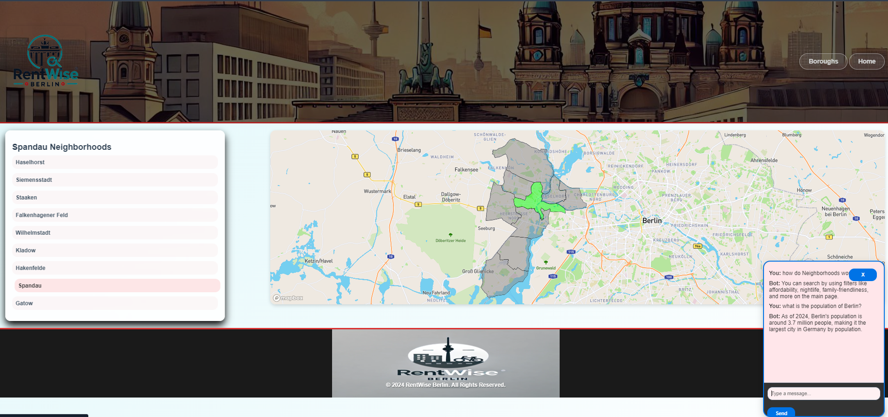
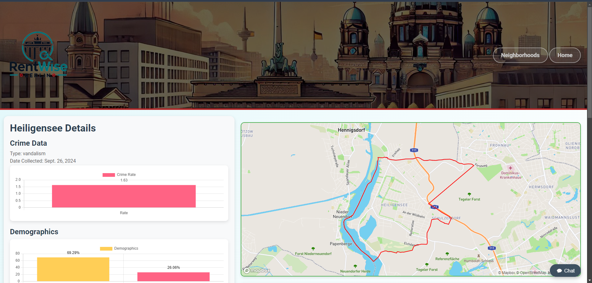
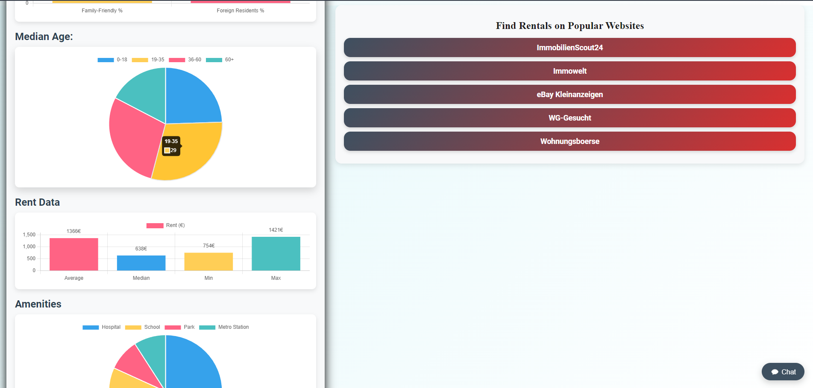

Berlin Capstone Project
This project is focused on analyzing and visualizing various Berlin neighborhoods based on factors such as rent affordability, crime rates, and demographics. The project includes interactive filtering and data visualizations, allowing users to explore different neighborhoods for specific attributes like family-friendliness, nightlife, or rent trends.
Technologies Used: Python, Django, PostgreSQL, Matplotlib, Plotly, Docker
View on GitHub This is the home page of the Berlin Capstone Project where users can explore various Berlin neighborhoods.
The borough filter page allows users to narrow down neighborhoods based on rent, lifestyle, and family preferences.

The neighborhoods page displays a list of all the available neighborhoods in Berlin.
 
The neighborhood detail page provides comprehensive insights including rent data, amenities, and crime statistics for each neighborhood.